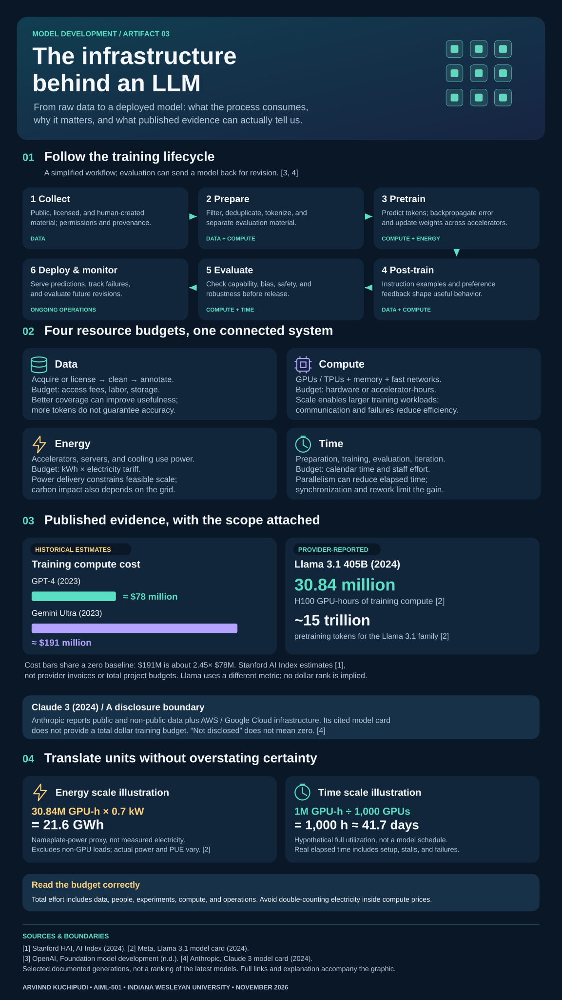

ARTIFACT 03 · INFOGRAPHIC
The Infrastructure
Behind an LLM
A visual guide to the training lifecycle and the data, compute, energy, and time behind large language models. Historical model examples distinguish reported measurements, external estimates, and illustrative calculations.
Arvinnd Kuchipudi · AIML-501 Model Development · Indiana Wesleyan University


The SVG download preserves the same design and selectable text.
Read the full graphic as text
The lifecycle
- Collect. Public, licensed, and human-created material; permissions and provenance. Resource focus: DATA.
- Prepare. Filter, deduplicate, tokenize, and separate evaluation material. Resource focus: DATA + COMPUTE.
- Pretrain. Predict tokens; backpropagate error and update weights across accelerators. Resource focus: COMPUTE + ENERGY.
- Post-train. Instruction examples and preference feedback shape useful behavior. Resource focus: DATA + COMPUTE.
- Evaluate. Check capability, bias, safety, and robustness before release. Resource focus: COMPUTE + TIME.
- Deploy & monitor. Serve predictions, track failures, and evaluate future revisions. Resource focus: ONGOING OPERATIONS.
Four resource categories
Data
Acquire or license → clean → annotate.
Budget Access fees, labor, and storage.
Better coverage can improve usefulness; more tokens do not guarantee accuracy.
Compute
GPUs / TPUs, memory, and fast networks.
Budget Hardware or accelerator-hours.
Scale enables larger workloads; communication and failures reduce efficiency.
Energy
Power for accelerators, servers, and cooling.
Budget kWh × electricity tariff.
Power delivery constrains scale; carbon impact also depends on the grid.
Time
Preparation, training, evaluation, and iteration.
Budget Calendar time and staff effort.
Parallelism can reduce elapsed time; synchronization and rework limit the gain.
Model examples and units
- GPT-4 (2023): approximately $78 million in estimated training compute cost; Gemini Ultra (2023): approximately $191 million. Both estimates come from Stanford HAI (2024), not provider invoices.
- Llama 3.1 405B (2024): Meta reports 30.84 million H100 GPU-hours. The Llama 3.1 family used approximately 15 trillion pretraining tokens. These are different units from dollars.
- Claude 3 (2024): the cited Anthropic card describes public and non-public data and AWS / Google Cloud infrastructure, but provides no total training-dollar figure.
- Energy illustration: 30.84M GPU-hours × 0.7 kW = 21.6 GWh. This is a GPU nameplate-power proxy, not measured or full-facility electricity use.
- Time illustration: 1M GPU-hours ÷ 1,000 GPUs = 1,000 hours ≈ 41.7 days at hypothetical continuous full utilization.
Training compute estimates exclude some project costs. Data, staff, experiments, and ongoing operations require separate budgeting. Electricity may already be included in accelerator rental prices; avoid adding it twice.
About this artifact
This original graphic turns published model documentation into a practical resource map. It demonstrates infrastructure analysis and evidence-based visual communication, expanding beyond the first artifact’s algorithm classification.
Unique value and relevance
The graphic keeps the scope and uncertainty attached to each number. It connects technical training stages with resource decisions and makes hidden assumptions visible—skills relevant to responsible AI planning, technical communication, and software delivery.
Skills demonstrated
LLM fundamentals, infrastructure literacy, quantitative reasoning, source evaluation, visual design, and accessible web communication.
Design and classification rationale
Lifecycle stages are ordered by dependency; resources are grouped by input or constraint. Cross-category stage labels show overlap. A shared-baseline chart compares only the two dollar estimates; GPU-hours and tokens are shown separately. Read the complete explanatory document for calculations, boundaries, and design rationale.
References
- Stanford Institute for Human-Centered Artificial Intelligence. (2024). Research and development. The 2024 AI Index report. https://hai.stanford.edu/ai-index/2024-ai-index-report/research-and-development
- Meta. (2024). Llama 3.1 405B model card. https://huggingface.co/meta-llama/Llama-3.1-405B
- OpenAI. (n.d.). How ChatGPT and our foundation models are developed. https://help.openai.com/en/articles/7842364-how-chatgpt-and-our-foundation-models-are-developed
- Anthropic. (2024). The Claude 3 model family: Opus, Sonnet, Haiku. https://assets.anthropic.com/m/61e7d27f8c8f5919/original/Claude-3-Model-Card.pdf
Artifact 01: Algorithm Types and Applications · Artifact 02: Visualizing Neural Networks